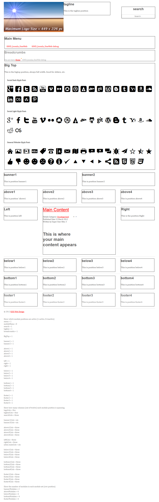

About This Project
This is a responsive, 'mobile first' HTML5 template from KISS Web Design
It was forked from https://github.com/nternetinspired/OneWeb
I have taken that a great baseline for building this template, adding my own bits along the way.
It incorporates the hard work of many talented people:
Notably, this template takes the HTML5 goodness and awesome polyfills from the HTML5 Boilerplate of Paul Irish. http://html5boilerplate.com
The mobile first logic and sexy typographic basics from 320 and up by Andy Clarke. http://www.stuffandnonsense.co.uk/projects/320andup/
Some really neat Joomla! tricks and Google Font awesomeness from Matt Thomas' Construct Framework. [http://construct-framework.com}(http://construct-framework.com "Link to the Construct Framework site")
The fluid 1140px Grid from Andy Taylor.http://cssgrid.net
And especially the work of Seth Warburton at Internet Inspired! @nternetinspired for pulling it all together, adding his own flair and creating the original OneWeb template. http://internet-inspired.com
Contact info
- Via github:
- Via website:
- Via Twitter:
- Via Facebook:
Quick start
- Clone the git repo
- git clone git://github.com/KISS-Web-Design/KWD_Joomla_OneWeb.git
- Or download it
User Information
- This is a starter template, it is meant to be a baseline for Joomla!2.5 templates to be designed with.
- You will need Joomla!2.5 installed on a server before you can use this starter template.
- You can install this starter template using the Joomla!2.5 Extension Manager, using the zip file included with this project.
- If you have trouble getting this starter template installed, then this project is not for you. It assumes an intermediate level of knowledge of Joomla!, the Joomla! templating system, HTML5, CSS3, PHP and Javascript.
- If you have a project in mind that you see being built using this starter template, but do not have the required skills/knowledge to make it happen - please feel free to contact me for a quote.
FEATURES
- Fully responsive scalable web design
- Cross-platform smartphone support
- Cross-platform tablet/pad support
- Includes Modernizr http://www.modernizr.com
- Includes respond.js https://github.com/scottjehl/Respond
- Includes Selectivizr http://selectivizr.com/
- 3 selectable fonts from google web fonts http://www.google.com/webfonts
- 3 selectable icon fonts - general purpose, social networking light, social networking dark
- Default font-size is 62.5% - makes it the equivalent of 10px, therefore using font sizes in rem units gives an easy conversion to px sizes, ie 1.0rem = 10px, 1.4rem = 14px, etc.
- Logo upload and select
- Selectable module widths, or auto-set based on the active modules
- Media queries for device screen sizes - 480, 600, 768, 992, 1382
- Media query for high density mobile displays (eg iPhone 4) - min-device-pixel-ratio: 1.5
- Small screensize optimization of the top menu (inserts a button to toggle the viewable menu on/off)
- Selectable debug mode - Set screen output to put all active module positions into a 1px black box, plus a list of module status and columns assigned per module position at the bottom of the page
- The following module positions are available:
- Top row
- Logo (reserved for the logo by default)
- Tagline
- Search
- Row 2
- Row 3
- Row 4
- Big Top (full width, ideal for sliders, etc)
- Row 5
- Row 6
- Above 1
- Above 2
- Above 3
- Above 4
- Row 7
- Row 8
- Below 1
- Below 2
- Below 3
- Below 4
- Row 9
- Bottom 1
- Bottom 2
- Bottom 3
- Bottom 4
- Row 10
- Footer 1
- Footer 2
- Footer 3
- Footer 4
- Row 11
- Copyright
- Module position / activation Debug information (if selected)
- The template, in debug mode, showing all the glyph fonts looks like this:

Contributing
- If you want to contribute please feel free to do so. There are many ways to help:
Project Information
Licences
Given the variety of sources there are many applicable licences for this Joomla! Template.
Some parts are availabele under dual licences.
Some parts are public domain, and as such have no licence restrictions.
- GNU/GPL v2 or later:
- The MIT License (MIT):
- The BSD Licence (BSD):
- Creative Commons Attribution-ShareAlike 3.0 Unported: